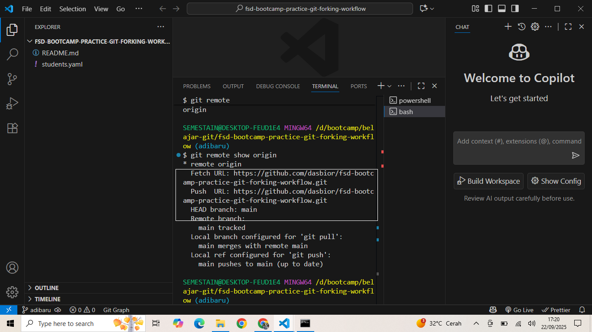

Setelah membuat Fork
setelah di copy lakukan clone dari terminal
setelah code fork di copy buka folder di terminal kemudain ketik "git clone" dan paste link kemudian Enter. stelah itu buka file di terminal VSC "pastikan di sebelah port pilih "git bash"
Tujuan untuk memastikan remote sudah terhubung. akan muncul "git remote origin" untuk memastikan Origin adalah milik kita buat perintah " git remote show origin" Enter
check link url pastikan menunjukkan origin adalah milik kita sendiri. jika salah lakukan clon ulang dari awal. selanjutnya lakukan koneksi ke upstream repo company ketik "git remote add upstream paste link code company
untuk memastikan sudah betul ketik "git remote" akan muncul 2 remote "origin dan upstream" untuk memastikan upstream milik company ketik "git remote show upstream" Enter. akan di tampilkan url link company
Selanjutnya sebelum edit project harus buat cabang baru atau new branch ketik " git checkout -b nama branch" stelah itu auto switch ke branch baru. untuk memastikan ketik "git branch" Enter. jika ada tnda * menunjukkan branch yang aktif sekarang. berikutnya edit (data kita ,nama,nama git,dll) kita di project
terus ketik "git commit -m "tambah baris baru" Enter".